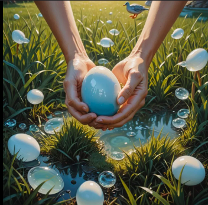
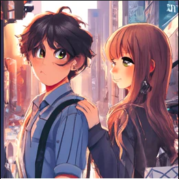
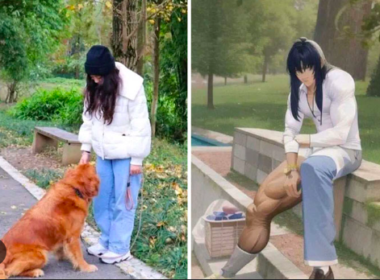

When I found out that AI is here to stay, understood the assignment, and was now a new era of art,
I was very concerned. Making art but making a a prompt sounded lazy but work smarter not harder I guess? Doesn't help when certain A.I images... LOOK  LIKE  THIS?  This is what's suppose to replace hard-working artists? Okay. I can laugh at it now but A.I and ChatGPT have advancing and more. Companies I wanted to work for are using it. Artist I looked up to are using it. Others have encouraged to use other AI type of programs like ChatGPT. I used it a couple of time to make lists of other artists to check out but I don't want to use it regardless. I want to avoid it as much as I can. It looks like becoming an artist is becoming harder than it already is.